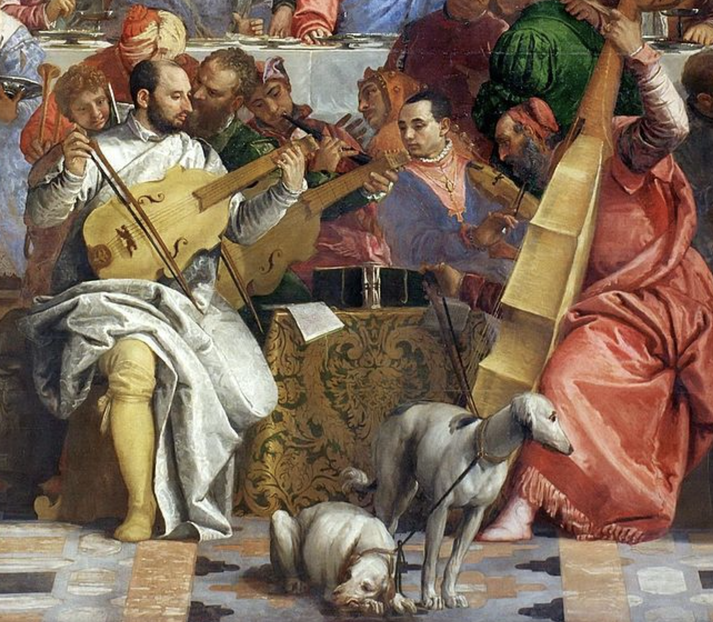

hover over image
hover over image
meaning can be changed with a simple crop.
a dinner with jesus could instead be about each individual wedding guest,
or a grand landscape set in the sky with people staring at the birds.
the ability to reproduce and view art in new contexts allows us to see different
meanings, rather than the overarching image, and to craft a story out of reality.
hover over the image to see this meaning change for yourself.


today, we lack a lot of context commonly found with previous forms of work, where instead context can be changed and altered to represent something new. This extends past just artwork, but with the ways we convey information through news, television, social media, and other forms of conveying information, all made more convenient through forms of the internet and social media.
art changes meaning based off of your surrounding environment & context when you percieve it.
for example, when you listen to calming or strong music while seeing this piece, how do you feel?
as art begins to become valued more as an asset than as a piece of art, societies understanding of
art begins to become a way to represent your wealth in a simple depiction. This used to be the case with oil paintings,
but has transformed itself into a digital age with the creation of NFTs. The idea of owning an image, and being the only
person to have access to it, is just a new way to flex your money and wealth through an asset such as art, similar to
sing expensive materials like in the past.